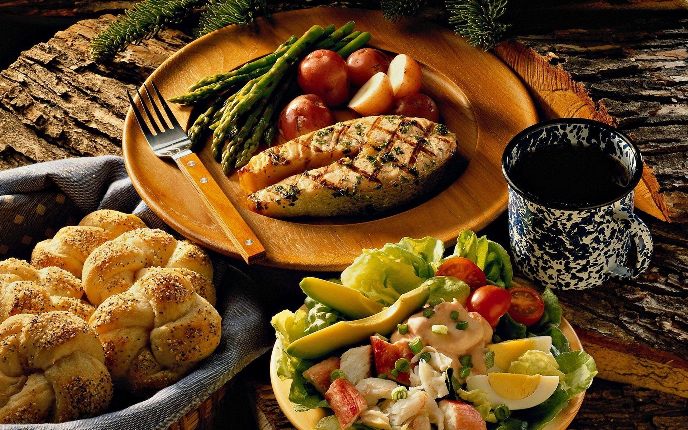
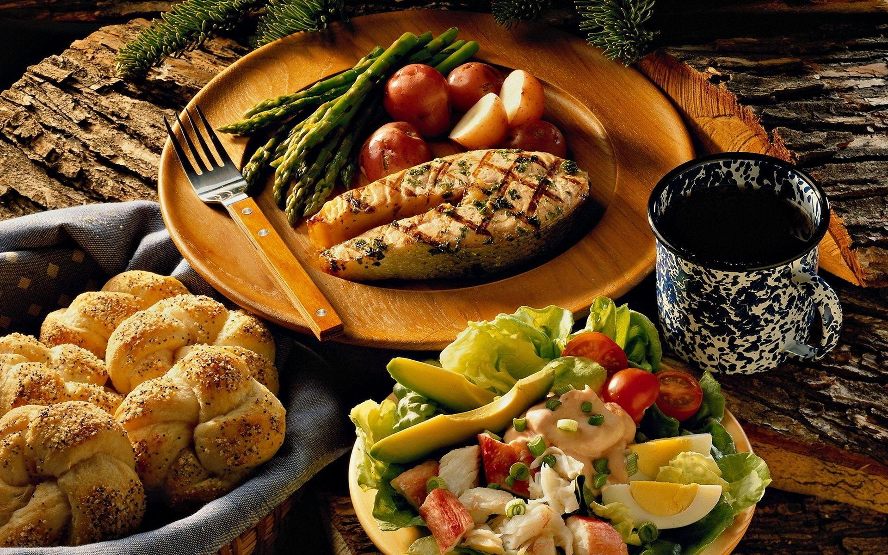

Welcome to our recipe website.
 

Nowadays supermarkets stock ingredients from across the world and city
streets are lined with restaurants representing every imaginable country. In the
West, Indian cooking is among the most popular of eastern cuisines, especially
now that keen home cooks have discovered how easy it is to prepare authentic,
tasty and nutritious Indian dishes. Perhaps the secrets of its popularity are
its subtlety and extraordinary variety.
Given that the subcontinent is so huge with an equally extensive history, it is
hardly surprising the both its peoples and their diets are so diverse. Religious
practices have had a profound influence-Hindus don't eat beef, Muslims don't eat
pork, and Buddhists, among others, are vegetarian. Explorers, conquerors and
colonizers have had an effect, too, clearly seen in the non- tasting dishes created
for Moghul emperor or the use of vinegar in the curries of former Portuguese
territories, for example. Foreign ingredients are most often seen in the dishes
of western India. Climate and topography play their part and each region of the
country has a unique style of cooking based on local ingredients. In the north,
dairy products, such as yogurt and ghee (clarified butter), are featured, as
well as nuts, while southern cooking is characterized by its use of coconuts,
their oil, and a variety of chiles.
Eastern regions are famous for their fish dishes and mustard oil. Delhi is well
known for tandoori cooking, Kashmir for its meat, especially lamb, Madras for
its wealth of vegetarian dishes, and Bengal for fine fish and .jpg) tooth-achingly
sweet desserts.
tooth-achingly
sweet desserts.
However, the cuisines of all regions are united in the use of
careful blends of spices, which are usually bought whole and ground as needed.
These mixtures are subtle and aromatic but not invariably hot, although both
fresh and dried chiles do feature in many dishes. With such a wide variety of
choice, why not let Indian cuisine add a touch of spice to your culinary
repertoire?
.jpg)
.jpg)
Recipe Catalog
Butter Chicken
Kashmiri Lamb Chops
Chile-cilantro Naan
Saffron and Almond Kulfi
Contact Us